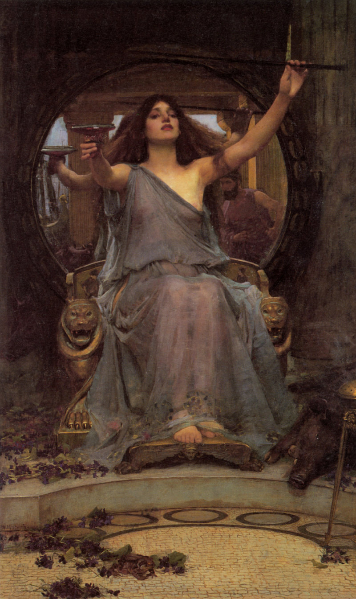

I raise up my voice—not so that I can shout, but so that those without a voice can be heard. … We cannot all succeed when half of us are held back.
About
Waterhouse painted numerous historical and mythical women. He represented them as if they were lost in meditation, curious, intelligent, lounging, pleading, enraged, laughing, stoic, crafty, envious, lovelorn, and longing. He painted them with strong chins, raised noses, and long hair that reflected their actual situation: bound up, caught in the wind, or swirling in the deep.